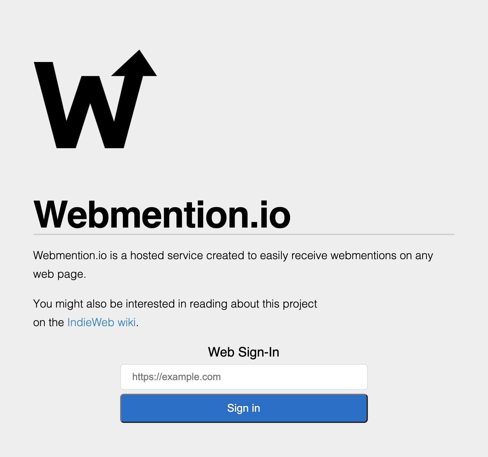
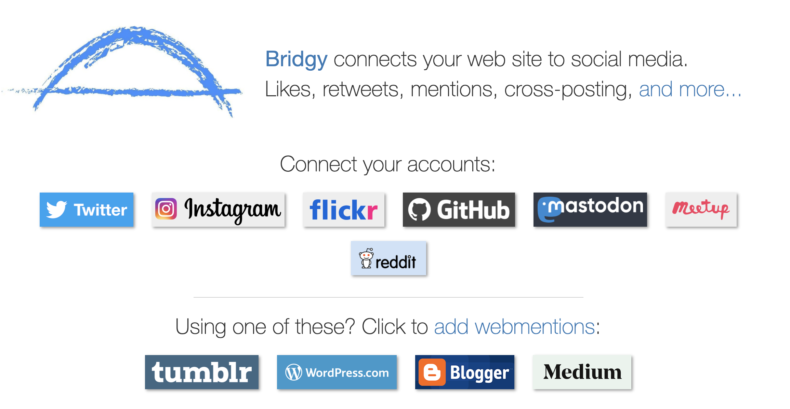
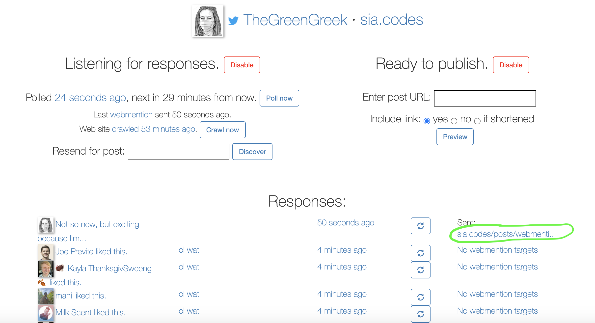
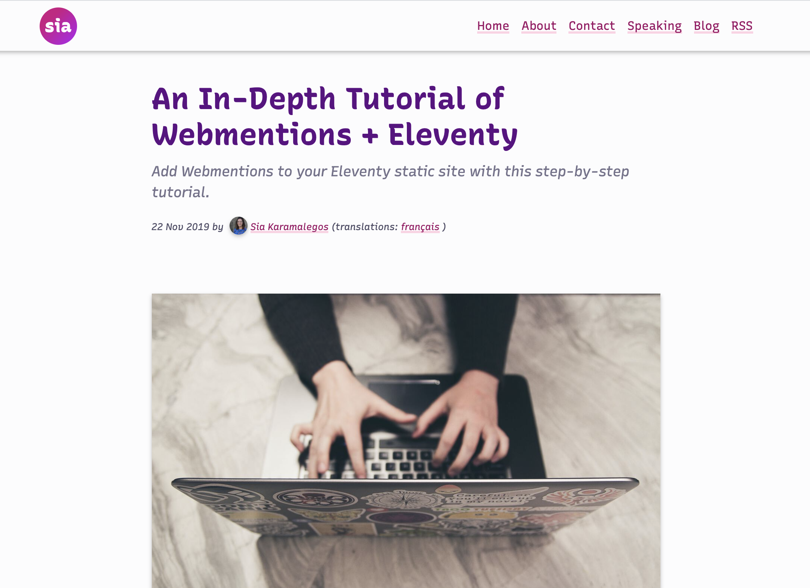

<!DOCTYPE html>
<html lang="en">
  <head>
    <meta charset="utf-8" />
    <meta name="viewport" content="width=device-width, initial-scale=1.0, maximum-scale=1.0, user-scalable=no" />

    <title>reveal-md</title>
    <link rel="stylesheet" href="./css/reveal.css" />
    <link rel="stylesheet" href="./_assets/style.css" id="theme" />
    <link rel="stylesheet" href="./css/highlight/github.css" />
    <link rel="stylesheet" href="./css/print/paper.css" type="text/css" media="print" />

  </head>
  <body>
    <div class="reveal">
      <div class="slides"><section  data-markdown><script type="text/template">

<!-- .slide: data-background="./images/akshar-dave-1GRvY9WUu08-unsplash.jpg" -->
<h1 class="title" style="text-align:left;">Webmentions<span class="translucent"> + Eleventy</span></h1>
<h2 class="subtitle" style="color:#333;text-align:left;">Sia Karamalegos</h2>
</script></section><section  data-markdown><script type="text/template">
## hi, i'm sia

[sia.codes](https://sia.codes/)


<!-- ---

## [bit.ly/web-images-2020](http://bit.ly/web-images-2020) -->
</script></section><section  data-markdown><script type="text/template">
<span class="icons"><i class="far fa-2x fa-laptop"></i>  <i class="far fa-2x fa-ellipsis-h"></i><i class="far fa-2x fa-long-arrow-right"></i> <i class="far fa-2x fa-desktop"></i></span>

> Webmention... enables one website address (URL) to notify another website address that the former contains a reference to the latter.

<small>[Webmentions: Enabling Better Communication on the Internet](https://alistapart.com/article/webmentions-enabling-better-communication-on-the-internet/)</small>
</script></section><section  data-markdown><script type="text/template">
<!-- .slide: data-background="./images/duotone-yell.png" class="dark-highlight-quote" -->

> When you link to a website, you can send it a Webmention to notify it. If it supports Webmentions, then that website may display your post as a comment, like, or other response, and presto, you’re having a conversation from one site to another! <!-- .element: class="dark-background" -->

<small class="dark-background">[indieweb.org](https://indieweb.org/Webmention)<!-- .element: class="dark-background" --></small>
</script></section><section  data-markdown><script type="text/template">
<span class="fa-stack fa-2x icons">
  <i class="far fa-building fa-stack-1x" style="color:#222;"></i>
  <i class="far fa-ban fa-stack-2x"></i>
</span>

> The IndieWeb is a people-focused alternative to the "corporate web".

<small>[indieweb.org](https://indieweb.org/)</small>
</script></section><section  data-markdown><script type="text/template">
## Principles of the IndieWeb <!-- .element: class="align-left" -->

<div class="align-left">
  <p class="fragment fade-in-then-semi-out"><span class="icons"><i class="far fa-browser"></i></span> Own your own domain</p>
  <p class="fragment fade-in-then-semi-out"><span class="icons"><i class="far fa-database"></i></span> Own your own content and data</p>
  <p class="fragment fade-in-then-semi-out"><span class="icons"><i class="fab fa-dev"></i></span> Optionally syndicate elsewhere</p>
  <p class="fragment fade-in-then-semi-out"><span class="icons"><i class="far fa-users"></i></span> Connect with everyone, e.g. using webmentions</p>

</div>
</script></section><section  data-markdown><script type="text/template">
<!-- .slide: data-background="./images/balloon-feet.png" -->

# How does it <br>work?<!-- .element: style="color:#fff;" -->
</script></section><section  data-markdown><script type="text/template">


<small>[webmention.io/](https://webmention.io/)</small>
</script></section><section  data-markdown><script type="text/template">
## webmention.io

Collects webmentions and pingbacks on your behalf

```html
<!-- in <head> of your website: -->
<link rel="webmention" href="https://webmention.io/yourdomain/webmention" />
<link rel="pingback" href="https://webmention.io/yourdomain/abcdefg" />
```

<aside class="notes"><p>pingbacks are a legacy XML-RPC protocol that existed before webmentions</p>
</aside></script></section><section  data-markdown><script type="text/template">
## webmention.io

Send webmentions as a POST request <br> to the webmention endpoint with:
- a source (your URL)
- the target (post you're replying to)

```
curl -si https://webmention.io/yourdomain/webmention \
  -d source=https://yourdomain/page_with_reply.html \
  -d target=https://page_being_replied.com
```
</script></section><section  data-markdown><script type="text/template">
Form on my blog pages for people to manually send replies:

```html
<form action="https://webmention.io/sia.codes/webmention" method="post">

  <input type="url" name="source">

  <input type="hidden" name="target"
    value="https://sia.codes/{{ page.url }}">

  <input type="submit">
</form>
```
</script></section><section  data-markdown><script type="text/template">


<small>[brid.gy/](https://brid.gy/)</small>

<aside class="notes"><p>allows you to easily grab webmentions from these social media platforms as well - for example, Twitter likes, replies, and retweets.</p>
</aside></script></section><section  data-markdown><script type="text/template">

</script></section><section  data-markdown><script type="text/template">


<small>[An In-Depth Tutorial of Webmentions + Eleventy](https://sia.codes/posts/webmentions-eleventy-in-depth/) on sia.codes</small>
</script></section><section  data-markdown><script type="text/template">
<!-- .slide: data-background="./images/duotone-road.png" -->

# Eleventy <!-- .element: class="dark-background" -->
</script></section><section  data-markdown><script type="text/template">
<!-- .slide: data-background="./images/akshar-dave-1GRvY9WUu08-unsplash.jpg" -->
<h1 class="title" style="text-align:left;">Thanks!</h1>

<p style="color:#333;text-align:left;">Slides:<br> <a href="http://bit.ly/web-images-2020" class="link-secondary">bit.ly/web-images-2020</a></p>
<p style="color:#333;text-align:left;">Tutorial:<br> <a href="https://sia.codes/posts/webmentions-eleventy-in-depth/" class="link-secondary">sia.codes/posts/webmentions<br>-eleventy-in-depth/</a></p>
<p style="color:#333;text-align:left;">Writing, resources, and more:<br> <a href="https://sia.codes/" class="link-secondary">sia.codes</a></p>
</script></section><section  data-markdown><script type="text/template">
## Photo credits

- Road possum - Image by <a href="https://pixabay.com/users/csbonawitz-10920947/?utm_source=link-attribution&amp;utm_medium=referral&amp;utm_campaign=image&amp;utm_content=3861107">csbonawitz</a> from <a href="https://pixabay.com/?utm_source=link-attribution&amp;utm_medium=referral&amp;utm_campaign=image&amp;utm_content=3861107">Pixabay</a>
- Hissing possum - Image by <a href="https://pixabay.com/users/xandepontes-13842118/?utm_source=link-attribution&amp;utm_medium=referral&amp;utm_campaign=image&amp;utm_content=4787791">Alexandre Pontes Gomes xande</a> from <a href="https://pixabay.com/?utm_source=link-attribution&amp;utm_medium=referral&amp;utm_campaign=image&amp;utm_content=4787791">Pixabay</a>
- Snow possum - https://biodiversity.utexas.edu/news/entry/campus-biodiversity-awesome-opossums
- Possum with babies - Wikimedia Commons https://commons.wikimedia.org/wiki/File:Didelphis_virginiana_with_young.JPG
- Balloons <span>Photo by <a href="https://unsplash.com/@buco_balkanessi?utm_source=unsplash&amp;utm_medium=referral&amp;utm_content=creditCopyText">Bucography</a> on <a href="https://unsplash.com/?utm_source=unsplash&amp;utm_medium=referral&amp;utm_content=creditCopyText">Unsplash</a></span>
- Heart balloons <span>Photo by <a href="https://unsplash.com/@akshar_dave?utm_source=unsplash&amp;utm_medium=referral&amp;utm_content=creditCopyText">Akshar Dave</a> on <a href="https://unsplash.com/?utm_source=unsplash&amp;utm_medium=referral&amp;utm_content=creditCopyText">Unsplash</a></span>
- Balloon and feet dangling - <span>Photo by <a href="https://unsplash.com/@edrecestansberry?utm_source=unsplash&amp;utm_medium=referral&amp;utm_content=creditCopyText">Edrece Stansberry</a> on <a href="https://unsplash.com/?utm_source=unsplash&amp;utm_medium=referral&amp;utm_content=creditCopyText">Unsplash</a></span>
- Possum yelling https://twitter.com/PossumEveryHour/status/1325951348291072000
- [@PossumEveryHour](https://twitter.com/PossumEveryHour)</script></section></div>
    </div>

    <script src="./js/reveal.js"></script>

    <script>
      function extend() {
        var target = {};
        for (var i = 0; i < arguments.length; i++) {
          var source = arguments[i];
          for (var key in source) {
            if (source.hasOwnProperty(key)) {
              target[key] = source[key];
            }
          }
        }
        return target;
      }

      // Optional libraries used to extend on reveal.js
      var deps = [
        { src: './plugin/markdown/marked.js', condition: function() { return !!document.querySelector('[data-markdown]'); } },
        { src: './plugin/markdown/markdown.js', condition: function() { return !!document.querySelector('[data-markdown]'); } },
        { src: './plugin/highlight/highlight.js', async: true, callback: function() { hljs.initHighlightingOnLoad(); } },
        { src: './plugin/zoom-js/zoom.js', async: true },
        { src: './plugin/notes/notes.js', async: true },
        { src: './plugin/math/math.js', async: true }
      ];

      // default options to init reveal.js
      var defaultOptions = {
        controls: true,
        progress: true,
        history: true,
        center: true,
        transition: 'default', // none/fade/slide/convex/concave/zoom
        dependencies: deps
      };

      // options from URL query string
      var queryOptions = Reveal.getQueryHash() || {};

      var options = extend(defaultOptions, {"transition":"none"}, queryOptions);
    </script>


    <script>
      Reveal.initialize(options);
    </script>
  </body>
</html>
